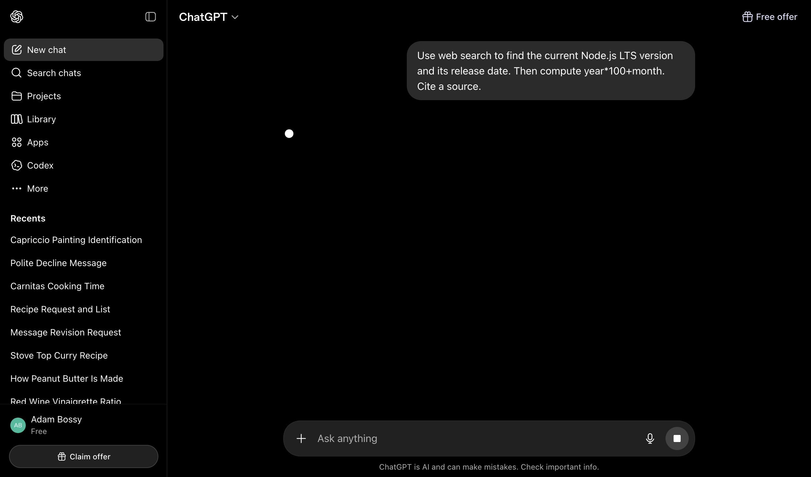
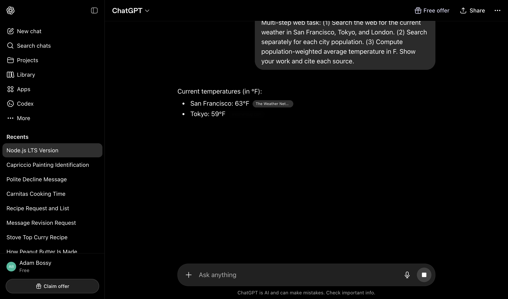
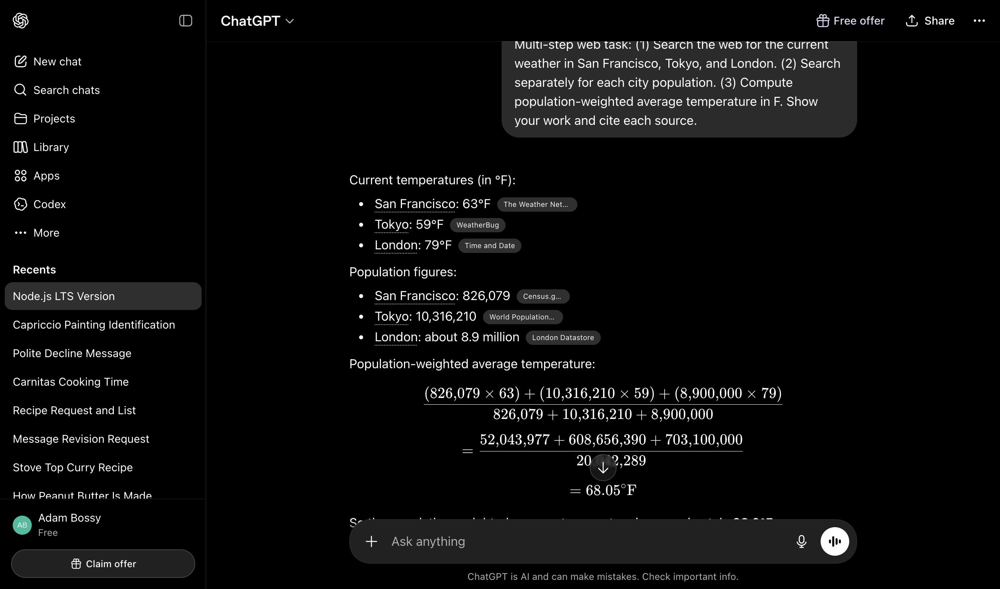

← Executive summary / ChatGPT
Web · Closed source · gpt-5-5 (free tier)
A single transcript stream of JSON-Patch ops, mutated in place. Tool calls and reasoning are completely absent from the visible UI on free tier — only inline citation pills hint at the agent loop underneath.
| t after Enter | UI state |
|---|---|
0 ms | User bubble appears. |
50–300 ms | Placeholder element: <div id="request-placeholder-request-WEB:<conv>-<n>">. textLen === 0. No spinner, no text. |
300–450 ms | Placeholder replaced by a real [data-message-id]. Inner container has class streaming-animation alongside markdown prose. Tokens begin appearing. |
450 ms → end | Content mutates in place. Citations append as <span data-testid="webpage-citation-pill"> with animate-[show_150ms_ease-in] fade-in. |
End | .streaming-animation removed. Sidebar updates with auto-generated conversation title. |
Empirical end-to-end durations: 2.5–7 s for the turns sent here. A multi-step web-search turn (6 cities × 2 stats) finished in 2.5 s including 6 citations rendered.



POST https://chatgpt.com/backend-api/f/conversationtext/event-stream; charset=utf-8\n\nevent: delta_encoding · data: "v1"| Record | Purpose |
|---|---|
event: delta_encoding | Version marker (always first). |
resume_conversation_token | JWT (5 min TTL) carrying conduit UUID, cluster, turn topic ID. Allows reattach on disconnect. |
input_message | Echo of the user message including metadata.resolved_model_slug, parent ID, useragent. |
event: delta (initial) | {"p": "", "o": "add", "v": {"message": {…}}} — first add of an assistant or hidden-system message. |
event: delta (subsequent) | JSON-Patch ops replace / append / patch against /message/... paths. |
message_marker user_visible_token | Assistant message becomes user-visible. |
message_marker final_channel_token | Final-channel content begins (vs. hidden channels). |
search_model_queries | Tool call payload. Inside a tool-role message: author.role="tool", author.name="web.run". queries: string[] runs in parallel. |
message_marker last_token | Last token streamed. |
stop | Stream termination marker. |
server_ste_metadata | Post-turn telemetry: plan, model slug, tool_invoked, autoswitch flags, region. |
message_stream_complete | End of HTTP stream. |
conversation_detail_metadata | Rate-limit and capability snapshot. |
ads / single_advertiser_ad_unit / url | Ad slots delivered in the same SSE channel (free tier). |
{"p": "", "o": "patch", "v": [
{"p": "/message/content/parts/0", "o": "append",
"v": "\\boxed{\\$563.06}\n\\]"},
{"p": "/message/status", "o": "replace",
"v": "finished_successfully"},
{"p": "/message/end_turn", "o": "replace",
"v": true},
{"p": "/message/metadata", "o": "append",
"v": {"is_complete": true,
"search_result_groups": [],
"finish_details": {"type": "stop", "stop_tokens": [200002]},
"can_save": true}}
]}The client keeps an in-memory message envelope and applies a tiny patch-stream to it. Markdown text is appended into /message/content/parts/0 as one string; the renderer re-tokenizes and re-paints on each append, with the streaming-animation class on the wrapper driving the blinking-caret CSS while patches keep coming.
web.run tool messages.The defining decision: tool calls are not rendered in the visible UI. They live entirely in the SSE stream and appear in the assistant message only as inline citation pills.
| Surface | Where |
|---|---|
| Pre-stream placeholder | <div id="request-placeholder-request-WEB:<conv>-<idx>"> — empty container, ~50–300 ms lifetime. The token WEB in the id is hard-coded regardless of whether web search will actually run. |
| In-flight tool message | Hidden. SSE delta carries an assistant message with author.role="tool", author.name="web.run", and metadata.search_model_queries.queries. Base envelope sets metadata.is_visually_hidden_from_conversation: true. No DOM element created. |
| Tool argument display | None in visible UI. Only SSE exposes the queries array. |
| Tool result rendering | None as standalone card. Folded into the next assistant message; surfaces only as citation pills. |
| Citation pill | <span data-testid="webpage-citation-pill" style="width: 102px;"> containing an <a target="_blank" rel="noopener">. Per-source width with max-w-[15ch] truncate. 150 ms fade-in. A +1 on the right indicates an additional source bundled into the citation. |
| Entity highlight | <span class="hover:entity-accent entity-underline inline cursor-pointer">. Underlined on hover, clickable, tied to SSE content_references[].type === "entity". |
The 6-city / 3-stat search turn contained two distinct web.run tool messages, linked via parent_id:
turn assistant a44ce553 (hidden)
└─ tool web.run e4ec743e — queries=[6 items: weather × 3 + population × 3] ← parallel within one call
└─ tool web.run 0c546de1 — queries=[3 items: refined weather queries] ← sequential after
└─ final assistant 56aed19b — the user-visible answer w/ 6 citations
The agent loop emits a single tool call whose payload contains multiple parallel sub-queries, then chains another tool message sequentially when another round is needed. The UI hides every intermediate node.
Not exposed on the free-tier GPT-5 (Auto) path. The server_ste_metadata event reports:
"did_auto_switch_to_reasoning": false,
"auto_switcher_race_winner": null,
"is_autoswitcher_enabled": falseNo hidden reasoning channel deltas, no "Thought for Ns" expandable section, no reasoning DOM element appeared on any of the four turns sent. With Plus / Pro and the "Thinking" picker, the literature reports a collapsible "Thought" block; that path could not be exercised here.
<div data-message-author-role="assistant"
data-message-id="…"
data-turn-start-message="true"
data-message-model-slug="gpt-5-5"
class="min-h-8 text-message relative flex w-full flex-col items-end gap-2 …">
<div class="flex w-full flex-col gap-1 empty:hidden">
<div class="streaming-animation markdown prose dark:prose-invert wrap-break-word w-full dark markdown-new-styling">
<!-- streamed markdown: <p>, <ul>, <li>, <code>,
<span webpage-citation-pill>, <span entity-underline>… -->
</div>
</div>
</div>streaming-animation is the only outward streaming indicator.data-start, data-end, data-section-id) — these align rendered DOM to the underlying token stream, presumably to let post-stream features (copy, hover-cards) map back to ranges.| Element | Animation | Duration / tick |
|---|---|---|
.streaming-animation | Blinking-caret keyframe (CSS, while patches stream) | continuous |
[data-testid="webpage-citation-pill"] | animate-[show_150ms_ease-in] fade-in | 150 ms |
.transition-colors on pills/links | duration-150 ease-in-out | 150 ms |
.hover:entity-accent | Colour swap on entity-underline | hover |
:focus-visible on assistant container | keyboard-focused:focus-ring | static |
No spinner / throbber / skeleton was observed. The entire pre-stream interval (placeholder lifetime) is too short for one to be useful (<300 ms).
/c/<conversation-id>. Auto-titled after the first user message — sidebar updated to "Node.js LTS Version" within seconds of turn 1.GET /backend-api/conversations?offset=0&limit=28&order=updated&is_archived=false&is_starred=false (re-fetched per turn).[data-message-id]). The transcript is a windowed view backed by the SSE-rebuilt store; scroll position determines what's mounted.resume_conversation_token JWT (5 min TTL) lets a refreshed tab pick up an in-flight stream — GET /backend-api/conversation/<id>/stream_status is the polling endpoint after reload.POST /backend-api/sentinel/{prepare,finalize,ping,req,heartbeat} runs the anti-bot guard; POST /backend-api/bazaar/event and bazaar/signal-event fire ad/event telemetry alongside the conversation stream.tool-role message and to not render an "explainer card." The only artefact is the inline citation pill. Contrast with Claude / Perplexity, which surface a "Searched: ..." block during streaming.WEB: prefix even for non-web turns. Suggests the same code path renders both, with the actual tool decision happening later./textdocs endpoint, not the DOM.ads and single_advertiser_ad_unit are delivered in the same channel as the assistant content, not as a separate request.sse-turn4-math.txt (17 KB), sse-turn3.txt (50 KB).{kind=link}
{kind=link}
{kind=link}
{kind=link}
{kind=link}
{kind=link}
{kind=link}